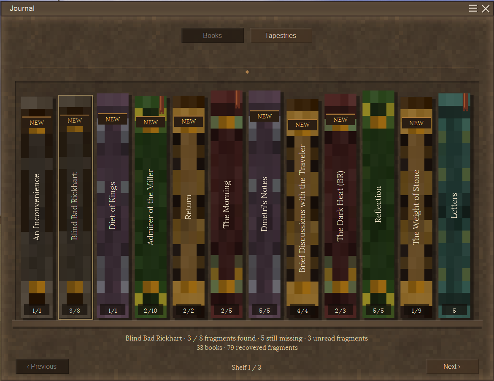
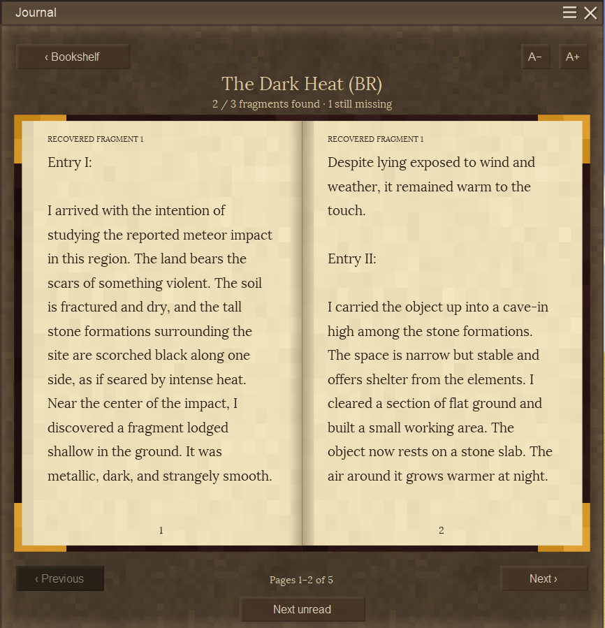
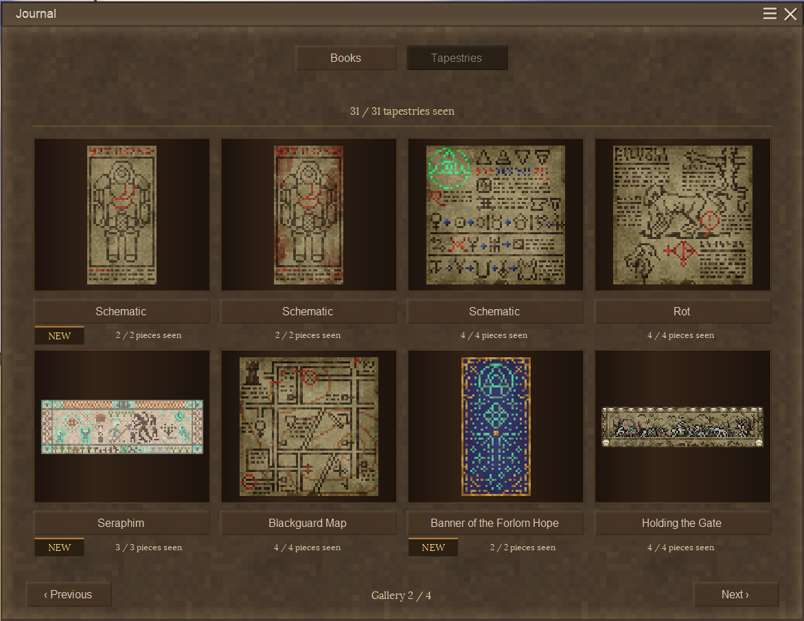
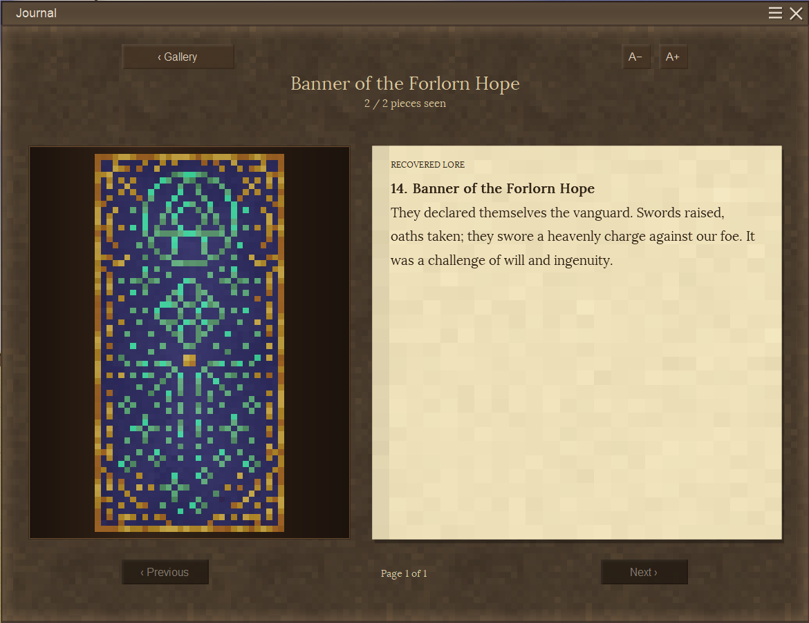

BetterJournal
By NiclAss · Client-side only · Vintage Story 1.22.7
BetterJournal replaces Vintage Story’s journal list with a bookshelf, animated books and a separate tapestry gallery. It displays the vanilla and modded lore your player has recovered through the normal journal.
Read your collected stories on fitted pages, adjust the text size, and return to unread passages using bookmarks and NEW markers. Tapestries have their own view for discovered artwork and recovered lore.
- Collected journal entries become books with readable spines and recovered-fragment counts when a reliable total is available.
- Books have animated opening, closing and page turns. Long entries use fitted pages instead of scrolling, with adjustable text size.
- Turn pages with buttons, arrow keys or a horizontal swipe.
- NEW markers, bookmarks, saved positions and Next unread help you return to unfinished stories.
- The tapestry gallery shows remembered artwork beside recovered lore, with missing pieces hidden.
- Uses the game’s installed book textures, paper, window backgrounds and buttons.




Screenshots show an existing collection, including modded lore. Your collection depends on your own discoveries. Some screenshots precede the final tapestry-name correction.
- Install the BetterJournal ZIP in your game profile’s Mods folder. Keep it zipped.
- Start Vintage Story 1.22.7 and enter your world or server.
- Press J, or your remapped journal key.
Install BetterJournal on your client only. The server does not need the mod. You can add it to an existing singleplayer or multiplayer world; no new world or unexplored chunks are required.
Remove older BetterJournal versions and any Lore Bookshelf development ZIP before installing. Do not run both journal replacements together. Development progress imports automatically.
Vanilla lore and modded entries delivered through the normal journal are supported, including BetterRuins. Independent lore systems, custom tapestry renderers and other journal replacements may need compatibility work. Other mods using J can compete for the same shortcut.
The tested game target is 1.22.7. Other game versions are not validated. First-time fitting of long text or a new text size can still cause a brief hitch.
| Recovered books | Book fragments already in your vanilla journal are readable immediately. Missing fragments remain missing. |
| Previously read entries | Without saved BetterJournal history, existing content initially shows NEW because vanilla does not supply reading-position or viewed-page history. |
| Recovered tapestry lore | The matching standard tapestry is reconstructed as complete with that received lore. The original assembly does not have to be nearby or still exist. |
| Previously seen partial tapestries | Vanilla does not save individual-piece viewing history. Look at those intact pieces again while BetterJournal is installed. The same applies to designs without journal lore. |
| Alternate artwork | A variant sharing another design’s lore is not automatically revealed. Look at its pieces separately. |
| Pieces found while installed | Each intact piece you look at is remembered for that world/player. Pieces from different copies can fill the same image. Completing the gallery image does not grant its lore. |
| Rotten pieces | Looking at rotten pieces adds no new progress. Previously received lore or remembered pieces are retained if a tapestry later rots, breaks or disappears. |
The normal game grants tapestry lore when you look at a complete, correctly assembled, intact tapestry in the world. Filling in the gallery from separately remembered pieces does not grant its story. A complete gallery image can therefore have pending lore; designs with no assigned lore remain artwork only.
NEW on books tracks displayed text rather than proving it was read. A focused page counts after it has settled for 1.5 seconds, or when you deliberately leave a fully displayed page. Skipped pages and animations do not count. A started story keeps its bookmark while fragments are missing or its total is unknown.
Completed tapestries show NEW until their completed detail view is acknowledged. Partial designs do not prompt completion. Viewing the detail is enough; every lore page does not need to be visited.
Reading history and remembered pieces are saved locally under ModData/betterjournal/, separately for each world and player. The server journal is not rewritten. This extra history does not automatically transfer to another computer or profile.
Remove the ZIP while the game is closed. On the next start, the vanilla journal returns. Normal lore discoveries, world blocks, items and existing tapestries remain intact. BetterJournal adds no world blocks or items.
Its local history files remain under ModData/betterjournal/. Reinstalling in the same profile restores unchanged reading history, bookmarks and remembered pieces for the same world/player.
Normal lore discoveries continue while the mod is absent. On reinstall, newly received journal fragments appear unread, and newly received tapestry lore can restore its standard artwork. Individual partial pieces only looked at during the absence are not tracked. Alternate and no-lore artwork still needs direct observations.
Deleting the local BetterJournal folder resets its extra history, not vanilla lore. Existing journal chapters remain available and can still restore matching standard tapestry artwork. Original development saves, if left in their old locations, may import again.
Removing a lore mod may leave saved journal entries whose text or art needs that mod’s assets. BetterJournal shows what the normal journal still contains; it does not supply missing assets. Removed entries leave dormant reading history. Restoring the same content and identity can restore its progress, while changed text, translations or IDs can appear unread again.
The original code is MIT licensed. Game content shown in screenshots belongs to its respective creators. See the full progress explanation for storage, backup recovery and development-save migration.
ModDB page design inspired by Algernon’s Watersheds